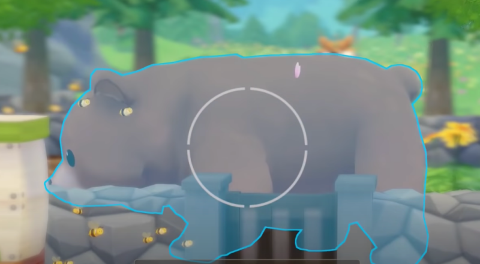

Museo


El museo cuenta con varios servicios.

Servicios de tasación de Reina
Reina se encuentra sentada en un escritorio en la esquina inferior derecha del primer piso del museo, justo a la derecha de Gloria. Su tarea es evaluar cualquier tesoro potencial que encuentres mientras te aventuras, ya sea excavando topos, drenando lagos y charcos, o en otras condiciones especiales como la pesca, por ejemplo.
Por sí mismos, los tesoros son esencialmente inútiles y ocuparán espacio en tu inventario si no los evalúas. Por eso, es un servicio al que te acostumbrarás rápidamente. Solo necesitas acercarte a Reina y hablar con ella para que valore cualquier tesoro que puedas tener. Ten en cuenta que no se pueden evaluar todos los tesoros de una sola vez, así que tendrás que repetir el proceso tantas veces como sea necesario.
Donar cosas a Gloria
Gloria se encuentra sentada a la izquierda de Reina y acepta tres tipos de donaciones de tu parte: tesoros que has evaluado a través de Reina, fotografías de animales salvajes que puedes tomar con tu cámara y peces recién capturados. Si eliges darle cualquiera de estos, te llevará a su respectiva sala en el Museo, donde podrás colocar tu donación en el lugar que desees. Es importante tener en cuenta que no puedes donar varios artículos al mismo tiempo, por lo que tendrás que repetir este proceso uno por uno para todos ellos.
Colección de tesoros
La mayoría de los tesoros se encuentran drenando estanques de agua o golpeando topos con su martillo en las minas, aunque hay un par de excepciones. Aquí os dejamos algunas de las localizaciones que hemos recopilado.
Lista de Tesoros
| Nº | Tesoro | Ubicación |
|---|---|---|
| 01 |  Fulgurita | Drenando charcos del area 1 de la granja. |
| 02 |  Arthurita | Drenando charcos del area 2 de la granja. |
| 03 |  Rosa del desierto | Valora un objeto pesado, obtenido al golpear topos en la mina n.° 3 (niveles 1 a 29) o drenando el estanque del area 3 de la granja. |
| 04 |  Okenita | Valora un objeto pesado, drenando estanque del area 2 de la granja. |
| 05 |  Piedra Gibeon | Valora un objeto pesado, drenando el estanque del area 2 de la granja. |
| 06 |  Piedra parásito | Valora un objeto pesado, que se obtiene golpeando topos en la mina n.° 3 (niveles 31 a 49) en la mina 3. |
| 07 |  Ámbar gris | Valora un objeto pesado, drenando el estanque del area 2 de la granja. |
| 08 |  Perla de caverna | Valora un objeto desgastado que se obtiene al golpear a los topos en la mina 2. |
| 09 |  Ámbar cristalizado | Valora un objeto pesado obtenido al golpear topos en la mina 3 (niveles 1-29). |
| 10 |  Cristal de oliva | Drenando charcos poco profundos en el area de la granja 2. |
| 11 |  Accesorio anticuado | Valora un objeto pesado drenando el estanque del area 2 de la granja. |
| 12 |  Espejo anticuado | Pescando con una caña de pescar de hierro o superior en el estanque del area 2 de la granja. |
| 13 |  Decoración anticuada | Valora un objeto pesado, que se obtiene golpeando topos en la mina n.° 3 (niveles 1 a 29) o drenando el estanque del area 2 de la granja. |
| 14 |  Monumento anticuado | Valora un objeto pesado, que se obtiene golpeando topos en la mina n.° 3 (niveles 1 a 29) o drenando el estanque del area 2 de la granja. |
| 15 |  Moneda desgastada | Pescando con una caña de pescar de hierro o superior en el estanque del area 2 de la granja. |
| 16 |  Abanico desgastado | Valora un objeto desgastado, que se obtiene golpeando topos o drenando el estanque del area 3 de la granja. |
| 17 |  Pergamino desgastado | Valora un objeto desgastado, que se obtiene al drenar el estanque del area 3 de la granja. |
| 18 |  Brújula desgastada | Valora un objeto desgastado, que se obtiene al drenar el estanque del area 3 de la granja. |
| 19 |  Mapa desgastado | Valora un objeto desgastado, que se obtiene al drenar el estanque del area 3 de la granja. |
| 20 |  Espuela brillante | Se puede obtener aleatoriamente usando una red en la playa en el área 3 de la granja. |
| 21 |  Broche brillante | Te lo da aleatoriamente el duende Travesi en el nivel 10 en la aldea de los duendes. |
| 22 |  Casco de vaca | Te lo da aleatoriamente el duende Travesi en el nivel 10 en la aldea de los duendes. |
| 23 |  Cuerno de oro | Valora un objeto pesado, obtenido al drenar el lago antiguo. |
| 24 |  Tomo negro antiguo | Valora un objeto pesado, obtenido al drenar el lago antiguo. |
| 25 |  Tomo blanco antiguo | Valora un objeto pesado, obtenido al drenar el lago antiguo. |
| 26 |  Zapato de cristal | Valora un objeto pesado, obtenido al drenar el lago antiguo. |
| 27 |  Equipo prehistórico | Pescando con una caña de pescar de oro o superior en el lago antiguo. |
| 28 |  Fósil de concha | Pescando con una caña de pescar de oro o superior en el estanques de la mina 3. |
| 29 |  Fósil de bicho | Evalúa un objeto pesado drenando el lago antiguo. |
| 30 |  Fósil de dinosaurio | Evaluar un objeto pesado drenando el lago antiguo. |
Colección de animales salvajes
Para conseguir sus fotos primero debes conseguir la camara y para eso debes hablar con Gloria para que te de la camara, una vez obtenido la camara para usarlo debes acercarte con cuidado a los animales que deseas, luego tomarles una foto con tu cámara una vez que brillen en azul.
Lista de animales salvajes
| Nº | Nombre | Lugar | Estacion | Clima | Tiempo | Animal |
|---|---|---|---|---|---|---|
| 01 | Ardilla | Tu granja, área 1. |
|
Soleado | 6 AM - 8 PM | |
| Aparece en tu granja y siempre cerca de arboles por lo que deberás conservar algunos de ellos. | ||||||
| 02 | Zorro | Aparece al norte de la ciudad en el Santuario. Ten cuidado pues se asusta fácilmente. |
|
Soleado | 12 PM - 8 PM | |
| Es muy pequeño por lo que debes prestar atención aparece cerca de la tercera mina al lado de las rocas de oro. | ||||||
| 03 | Zorro blanco | El bosque de Villa Oliva en el Santuario. | |
Soleado | 12 PM - 8 PM | |
| También aparece al norte de la ciudad en el Santuario pero en invierno. | ||||||
| 04 | Armiño | Tu granja, en el área 3. |
|
Soleado | 1 PM - 8 PM | |
| Aparece cerca de los árboles. | ||||||
| 05 | Armiño blanco | Tu granja, en el área 3. | |
Soleado | 1 PM - 8 PM |  |
| También necesita tener árboles cerca para aparecer. | ||||||
| 06 | Oso | Tu granja un lugar donde tengas muchas colmenas de miel. |
|
Soleado | 6 AM - 2 AM |  |
| Aparece cerca de las colmenas, pues les gusta la miel. | ||||||
| 07 | Mono | Tu granja, área 3. | Todas | Soleado | 6 AM - 8 PM | |
| Tienes que tener un tocón de tronco para que aparezcan. Por lo tanto cuando tales árboles asegúrate de dejar algunos tocones para que puedan aparecer y jugar al día siguiente. | ||||||
| 08 | Gorrión | Granja en el área 1. | Todas | Soleado | 6 AM - 12 PM | |
| Son bastante fáciles de encontrar y aparecen en todas las estaciones. | ||||||
| 09 | Búho | Tu granja, áreas 2 o 3. | Todas | Soleado | 8 PM - 2 AM |  |
| Aparece por la noche y se puede escuchar, pero ten cuidado porque se asusta fácilmente y puede escapar si te acercas mucho y rápido. | ||||||
| 10 | Pájaro Azul | Tu granja, área 3. |
|
Soleado | 8 AM - 3 PM | |
| Es de los más difíciles de fotografiar. Debe tener muchos árboles y plantas cerca para aparecer. | ||||||
| 11 | Perdiz nival | Tu granja, en el área 3 cerca de las flores. | |
|
6 AM - 2 AM |  |
| Aparece cerca de las flores en la zona 3 de tu granja. Deberas plantar flores para que aparezca. | ||||||
| 12 | Águila | Tu granja en la zona de playa. | Todas | Soleado | 6 AM - 9 PM |  |
| Aparece solo algunos días en tu zona de playa o granja y solamente durante las mañanas. | ||||||
| 13 | Halcón | Tu granja en la zona de playa del area 2 o 3. | Todas | Soleado | 6 AM - 9 PM | |
| Aparece más a menudo que el Águila también en la zona de granja de nuestra playa. | ||||||
| 14 | Escarabajo rinoceronte | Tu granja, en el área 3. | |
Soleado | 12 AM - ? | |
| Aparece en el tronco de los árboles. | ||||||
| 15 | Escarabajo Hércules | Tu granja, en el área 3 en los árboles. | |
|
8 PM - 2 AM | |
| Aparece por la noche también en los troncos de los árboles. | ||||||
| 16 | Escarabajo ciervo | Tu granja, en el área 2 y 3 en los árboles. | |
Soleado | 12 AM - ? |  |
| También aparece en los árboles pero en el área 3 de tu granja. | ||||||
| 17 | Mariposa blanca | Tu granja, en las áreas 1 y 2. |
|
Soleado | 6 AM - 2 AM | |
| Necesita los mismos requisitos que la mariposa anterior y suelen aparecer juntas. | ||||||
| 18 | Mariposa cola de golondrina | Tu granja, en el área 3. |
|
Soleado | 6 AM - 2 AM |  |
| A estas mariposas les encantan las flores y colmenas por lo que aparecerán cerca de ellas. | ||||||
| 19 | Mariposa azul | Tu granja, en el área 3. |
|
Soleado | 6 AM - 2 AM | |
| Aparecen cerca de las flores por lo que deberás plantar varias. | ||||||
| 20 | Cangrejo | Tu granja, en el área 2 en la zona de playa. | |
Soleado | 6 AM - 9 PM | |
| Aparece en la zona de playa de tu granja, presta atención pues suele esconderse dentro del agua y cuesta trabajo encontrarlo. | ||||||
| 21 | Milpiés gigante | Tu granja en la mina de oro, la mina 3. | Todas | Soleado | 6 AM - 2 AM | |
| Es muy pequeño por lo que debes prestar atención aparece cerca de la tercera mina al lado de las rocas de oro. | ||||||
Decoración falsa de Beth
En el mostrador de Beth, puedes comprar una réplica de una estatua de cualquier fotografía o tesoro de vida silvestre que hayas donado al museo.
Lista de estatuas decorativas de los animales salvajes
| Estatua | Precio de compra | Precio de venta |
|---|---|---|
 Estatua de ardilla |
1.000 G | 500 G |
 Estatua de zorro |
1.200 G | 600 G |
 Estatua de zorro blanco |
3.600 G | 1.800 G |
 Estatua de armiño blanco |
1.800 G | 900 G |
 Estatua de armiño blanco |
5.400 G | 2.700 G |
 Estatua de oso |
60.000 G | 30.000 G |
 Estatua de mono |
9.600 G | 4.800 G |
 Estatua de gorrión |
600 G | 300 G |
 Estatua de búho |
1.600 G | 800 G |
 pájaro azul |
10.000 G | 5.000 G |
 Estatua de perdiz nival |
8.000 G | 4.000 G |
 Estatua de águila |
2.400 G | 1.200 G |
 Estatua de halcón |
3.600 G | 1.800 G |
 Estatua de escarabajo rinoceronte |
5.200 G | 2.600 G |
 Estatua de escarabajo hércules |
18.000 G | 9.000 G |
 Estatua de escarabajo ciervo |
2.000 G | 1.000 G |
 Estatua de mariposa blanca |
800 G | 400 G |
 Estatua de mariposa mariposa cola de golondrina |
6.000 G | 3.000 G |
 Estatua de mariposa azul |
16.000 G | 8.000 G |
 Estatua de cangrejo |
6.000 G | 3.000 G |
 Estatua de milpiés gigante |
20.000 G | 10.000 G |
Lista de estatuas decorativas de los tesoros
| Estatua | Precio de compra | Precio de venta |
|---|---|---|
 Estatua de fulgurita |
1.000 G | 500 G |
Estatua de zorro |
1.200 G | 600 G |
Estatua de zorro blanco |
3.600 G | 1.800 G |
Estatua de armiño blanco |
1.800 G | 900 G |
Estatua de armiño blanco |
5.400 G | 2.700 G |
Estatua de oso |
60.000 G | 30.000 G |
Estatua de mono |
9.600 G | 4.800 G |
Estatua de gorrión |
600 G | 300 G |
Estatua de búho |
1.600 G | 800 G |
pájaro azul |
10.000 G | 5.000 G |
Estatua de perdiz nival |
8.000 G | 4.000 G |
Estatua de águila |
2.400 G | 1.200 G |
Estatua de halcón |
3.600 G | 1.800 G |
Estatua de escarabajo rinoceronte |
5.200 G | 2.600 G |
Estatua de escarabajo hércules |
18.000 G | 9.000 G |
Estatua de escarabajo ciervo |
2.000 G | 1.000 G |
Estatua de mariposa blanca |
800 G | 400 G |
Estatua de mariposa mariposa cola de golondrina |
6.000 G | 3.000 G |
Estatua de mariposa azul |
16.000 G | 8.000 G |
Estatua de cangrejo |
6.000 G | 3.000 G |
Estatua de milpiés gigante |
20.000 G | 10.000 G |
Lista de Peces
La ubicaciones varían según el lugar donde uses tu caña de pescar. Cuanto más actualices y utilices cebos y redes, más peces podrás encontrar. Sin embargo, ten en cuenta que cualquier pez que dones a Gloria lo perderá, así que debes ser cuidadoso con tus elecciones de donación. A continuación, presento nuestra lista de todos los peces que hemos encontrado:
Primera parte
| Nº | Nombre | Precio | Pez |
|---|---|---|---|
| 01 | Sardina | 39 G |  |
| 02 | Eperlano Shishamo | 30 G |  |
| 03 | Jurel | 60 G |  |
| 04 | Leucisco | 54 G |  |
| 05 | Arenque | 60 G |  |
| 06 | Bacalao | 66 G |  |
| 07 | Anguila | 80 G |  |
| 08 | Lubina | 154 G |  |
| 09 | Perca amarilla | 56 G |  |
| 10 | Tilapia | 60 G |  |
| 11 | Siluro | 160 G |  |
| 12 | Cabeza de serpiente | 150 G |  |
| 13 | Pargo | 180 G |  |
Segunda parte
| Nº | Nombre | Precio | Pez |
|---|---|---|---|
| 14 | Sabalote | 100 G |  |
| 15 | Besugo | 150 G |  |
| 16 | Platija | 120 G |  |
| 17 | Salmón | 240 G |  |
| 18 | Dorado | 165 G |  |
| 19 | Pez remo | 400 G |  |
| 20 | Atún | 300 G |  |
| 21 | Pez caimán | 400 G |  |
| 22 | Rape | 500 G |  |
| 23 | Siluro gigante | 900 G |  |
| 24 | Cangrejo de río | 30 G |  |
| 25 | Camarón gamuza barbudo | 45 G |  |
| 26 | Langostino de río | 50 G |  |
Tercera parte
| Nº | Nombre | Precio | Pez |
|---|---|---|---|
| 27 | Camarón tigre gigante | 60 G |  |
| 28 | Langosta | 80 G |  |
| 29 | Langosta de roca | 150 G |  |
| 30 | Cangrejo Gazami | 30 G |  |
| 31 | Cangrejo azul | 45 G |  |
| 32 | Cangrejo peludo | 50 G |  |
| 33 | Cangrejo de las nieves | 75 G |  |
| 34 | Calamar común | 30 G |  |
| 35 | Calamar lanceolado | 30 G |  |
| 36 | Calamar manopla | 40 G |  |
| 37 | Sepia | 60 G |  |
| 38 | Almeja roja | 12 G |  |
| 39 | Ostra | 22 G |  |
Cuarta parte
| Nº | Nombre | Precio | Pez |
|---|---|---|---|
| 40 | Mejillón | 30 G |  |
| 41 | Oreja de mar | 40 G |  |
| 42 | Raya jaspeada | 880 G |  |
| 43 | Fletán | 900 G |  |
| 44 | Mero Gigante | 1.000 G |  |
| 45 | Pez espada | 1.000 G |  |
| 46 | Calamar gigante | 1.050 G |  |
| 47 | Cangrejo Rey Gigante | 900 G |  |
| 48 | Pez radiante | 500 G |  |
| 49 | Pez brillante | 1.000 G |  |
| 50 | Pez aurora | 2.000 G |  |
Para saber donde y cuando atrapar a los peces puede acceder este enlace donde esta las actividades que puedes realizar y buscar en la seccion de peces.